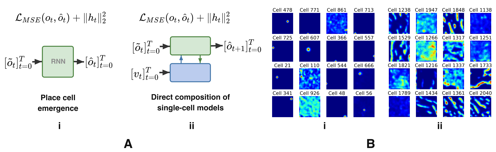

A recurrent network trained on a single task, predicting the next sensory observation, develops both grid-like and place-like spatial representations. Neither code is supplied as a target or assumed to exist beforehand.

A recurrent network trained on a single task, predicting the next sensory observation, develops both grid-like and place-like spatial representations. Neither code is supplied as a target or assumed to exist beforehand.
Many models explain grid cells by assuming place cells already exist, or vice versa. We ask whether both can emerge together from predicting sensory experience during navigation.

Of 2,048 recurrent units, half receive sensory and motion input; the rest receive only recurrent input. All learn through the same next-observation prediction objective.
Repeated grid-like fields and localized place-like fields emerge in the same network, supporting complementary demands: recovering sensory state and updating it during movement.

{{ page.citation | escape }}